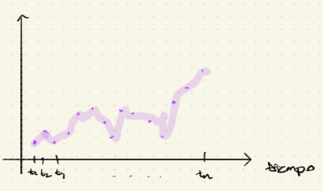
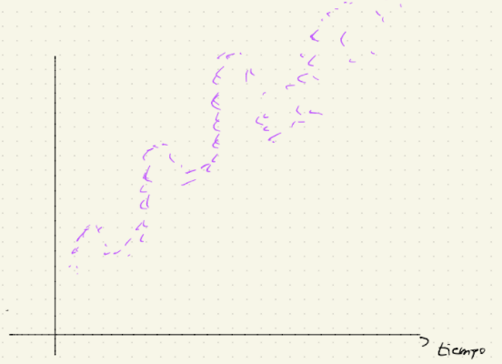
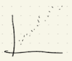

Series de tiempo
Las expresiones de “datos en series de tiempo” ó “series de tiempo” se refieren a conjuntos de observaciones tomadas en forma secuencial a través del tiempo.

En este caso de puntos que observamos de manera secuencial, usaremos la notación \(\{x_t\}_{t\in\mathbb{N}^+}\) si las observaciones están equiespaciadas a lo largo del tiempo.
Ejemplo:
\[ x_1:\text{ observación de hoy} \\ x_2:\text{ observación de mañana}\\ x_3:\text{ observación de pasado mañana} \]
no siempre las series las observaciones de manera equiespaciadas
Ejemplo:
\(\{x_{t_j}\}_{j \in \mathbb{N}}\) si las observaciones no están igualmente espaciadas. Observaciones de:
\[ x_{t_1}: 16 \text{ abril } 2021 \\ x_{t_2}: 19 \text{ abril } 2021 \\ x_{t_3}: 10 \text{ mayo } 2021 \\ x_{t_4}: 15 \text{ mayo } 2021 \]
El caso más popular es el equiespaciado
De manera más formal
Estructura distribucional, i.e. la función de distribución conjunta de la serie \(F_{x_{t_1}, x_{t_2}, ..., x_{t_n}}\) decimos que el análisis es de primer orden,
Estructura observacional, i.e. la asociación de correlación entre las observaciones de la serie, decimos que el análisis es de 2° orden.
Definición. Un proceso de serie de tiempo, es un proceso estocástico, i.e. es una colección de variables aleatorias \(\{x_t\}_{t\in T}\) en el mismo espacio de probabilidad \((\Omega, \mathcal{F}, \mathbb{P})\).
Se dice que la serie es a tiempo discreto si \(T \subset \mathbb{Z}\)
Se dice que la serie es a tiempo continuo si \(T \sim \mathbb{R}, T = [0, \infty), T = [a, b]\)
Definición. Se dice que un proceso estocástico \(\{x_t\}_{t\in T}\) es completamente estacionario o fuertemente estacionario si \(\forall t_1, ..., t_n \in T, \forall t \in \mathbb{R}\) tal que \(t_1 +t,t_2 +t, ..., t_n +t \in T\).
\[ F_{X_{t_1}, X_{t_2}, ..., X_{t_n}} (a_1, a_2, ..., a_n) = F_{X_{t_1 + t}, X_{t_2+ t}, ..., X_{t_n+ t}} (a_1, a_2, ..., a_n) \]
i.e. el vector \((X_{t_1}, X_{t_2}, ..., X_{t_n})\) tiene la misma función de distribución que el vector \((X_{t_1 + t}, X_{t_2+ t}, ..., X_{t_n+ t})\)
Definición. Se dice que un proceso \(\{X_t\}_{t \in T}\) es débilmente estacionario (ó estacionario de segundo orden) si \(\forall n \in \mathbb{N_+}, \forall t_1, t_2, ..., t_n \in T, \forall t \in \mathbb{R}\) tal que \(t_1+t, t_2+t, ..., t_n+t \in T\). Todos los momentos de orden 1 y 2 del vector \((X_{t_1}, X_{t_2}, ..., X_{t_n})\) son iguales a los correspondientes momentos de orden 1 y 2 del vector \((X_{t_1 + t}, X_{t_2+ t}, ..., X_{t_n+ t})\) es decir
\[ \mathbb{E}\bigg[ X_{t_1}^{r_1} X_{t_2}^{r_2} ... X_{t_n}^{r_n}\bigg] = \mathbb{E}\bigg[ X_{t_1+t}^{r_1} X_{t_2+t}^{r_2} ... X_{t_n+t}^{r_n}\bigg] \]
con \(r_1, ..., r_n \in \mathbb{N}\) tal que \(r_1+r_2 +...+ r_n \leq 2\).
Condiciones a verificar para estacionariedad débil
\[ r_j = 1, r_i = 0 \\ r_i = 1, r_j = 1 \\ r_i = 2, r_j = 0 \]
Esto se reduce a
\[ \mathbb{E}(X_{t_j}) = \mathbb{E}(X_{t_j + t}) \\ \mathbb{E}(X_{t_i} X_{t_j}) = \mathbb{E}(X_{t_i + t} X_{t_j + t}) \\ \mathbb{E}(X_{t_j} ^2) = \mathbb{E}(X_{t_j + t}^2) \]
Es se reduce a verificar
\[ Cov(X_\tau, X_s) = Cov(X_{\tau+t}, X_{s+t}) \]
Todo ruido blanco es débilmente estacionario.
Pero no todo proceso débilmente estacionario es ruido blanco.
El análisis tradicional de series de tiempo descompone a la serie observada de la siguiente manera.
\[ X_t = \underbrace{m_t}_{\text{componente}\\\text{de tendencia}} + \underbrace{S_t}_{\text{componente}\\ \text{estacional} \\ \text{(seasonality)}} + \underbrace{Y_t}_{\text{componente}\\\text{aleatoria}} \]

Los objetivos al hacer análisis de series de tiempo son
Estimar \(m_t, S_t\)
Estimar \(Y_t\)
Encontrar un modelo adecuado para este de entre un catálogo de modelos.
Hacer predicciones.
\(y_t \rightarrow\) Las \(Y_t'^s\) son independientes e identicamente distribuidas (generalmente Gaussianas)
Se dice que una serie de tiempo \(\{y_t\}\) es débilmente estacionaria ó estacionaria de segundo orden si:
\(\mathbb{E}(y_t)\) no depende de \(t\)
\(Cov(y_t, y_s)\) depende de \(s\) y \(t\) sólo a través del lapso de tiempo \(|t-s|\)
\[ \rho_k = Corr(y_t, y_{t-k}) = \frac{Cov(y_t, y_{t-k})}{\sqrt{Var(y_t)Var(y_{t-k})}} = \frac{Cov(y_t, y_{t-k})}{\sigma_y^2} \]
Libros
Brockwell & Davis. Intro to time series
Tibshiarani et. al. Intro to Statistical Learning.
Frees. Regression Techniques for actuarial applications.
\[ r_k := \frac{\displaystyle\sum_{t = k+1}^\tau (y_{t} - \bar{y})(y_{t-k} - \bar{y})}{\displaystyle\sum_{t =1}^\tau(y_{t} - \bar{y})^2} \]
donde
\[ \bar{y} = \frac{1}{\tau}\sum_{t = 1}^\tau y_t\\ \\ \\ y_1 \space \space \space \space \space y_2 \space \space \space \space \space ... \space \space \space \space \space y_{\tau-k} \\ \updownarrow \space \space \space \space \space \space \space \updownarrow \space \space \space \space \space ... \space \space \space \space \space \space \space \updownarrow \\ y_{k+1} \space \space \space \space \space y_{k+2} \space \space \space \space \space ... \space \space \space \space \space y_{\tau} \]
Sean \(y_1, ..., y_T\) observaciones
\(\hat{y}_{T+l} = \bar{y} =\displaystyle \frac{1}{T} \sum_{t = 1}^T y_t\)
Error de pronóstico
\[ y_{T+l} - \underbrace{\bar{y}}_{\hat{y}_{T+l}} \sim N(0 , \sigma^2(1+\frac{1}{T})) \]
Intervalo forecast ó intervalos de predicción
\[ \bar{y} \pm \underbrace{t_{T-1, \frac{\alpha}{2}}}_{\text{upper-cuantile}} \sqrt{S_y ^2 \bigg(1+ \frac{1}{T}\bigg)} \]
Si T es grande, al \(95\%\)
\[ \bar{y} \pm 1.96\sqrt{S_y^2} = \bar{y} \pm 1.96S_y \]
\[ y_t = y_0 + \sum_{i=1} ^t c_i, \{c_i\} \text{ es un ruido blanco} \]
Afirmaciones
\(\mathbb{E}(y_t) = y_0 + t\cdot \mu_c\)
\(Var(y_t) = t\cdot \sigma^2_c\)
\(Cov(y_t, y_s) = min\{s, t\}\cdot\sigma^2\)
La caminata aleatoria no es estacionaria.
Demostración: tú puedes 👏🏻
\(y_{T+l} = y_T + \displaystyle\sum_{t = T+1}^{T+l} c_k\)
\(\hat{y}_{T+l} = y_T + l\bar{c}\) (el pronóstico crece linealmente)
\[ y_{T+l} - \hat{y}_{T+l} = \sum_{t = T+1}^{T+l} c_t - l\bar{c} \]
Error estándar del error pronóstico
\[ \sqrt{\hat{Var}(y_{T+l} - \hat{y}_{T+l})} \approx \sqrt{\hat{Var}\bigg( \sum_{t = T+1}^{T+l}c_t \bigg)} = \sqrt{S_c^2 \cdot l} \]
Error estándar exacto del error de pronóstico
\[ \sqrt{Var(y_{T+l} - \hat{y}_{T+l})} = S_c \sqrt{l\bigg(1+\frac{l}{T}\bigg)} \]
Intervalo de predicción al \(95\%\)
\[ \hat{y}_{T+l} \pm 1.96 \sqrt{\hat{Var}(y_{T+l} - \hat{y}_{T+l})} \\ \text{i.e. } y_T + l\bar{c} \pm 1.96 \sqrt{S_c^2 \cdot l} \]
Un pqueño aspecto computacional
Si se da el ruido aleatorio (no la caminata aleatoria)
\(\hat{y}_{T+l} = y_t + l\bar{c}\)
\(y_T + l\bar{c} \pm 1.96\sqrt{S_c^2 \cdot l}\) i.e. se calcula \(\bar{c}\) y \(S_c^2\) muestrales (del ruido blanco)
Si se dan los puntos de la caminata aleatoria
\(c_t = y_t - y_{t-1}\) de aquí se parte
\(\bar{c} = \frac{1}{T}(c_1 + c_2 + ... + C_T) = \frac{y_T - y_0}{T}\)
\(\mathbb{E}(y_t) = y_0 + t\cdot\mu_c\) esto implica una tendencia una lineal en el tiempo.
\(Var(y_t) = t \cdot \sigma_c ^2\) la varianza es creciente con respecto al tiempo.
Si \(\{y_t\}\) es caminata aleatoria
\[ c_t = y_t - y_{t-1} \] debiese ser un ruido blanco y entonces debería tener correlaciones cercanas a 0 (no significativamente distintas de 0).
La desviación estándar de la serie original \(\{y_t\}\) debiése ser sustiancialmente mayor que la serie de diferencias \(c_t = y_t - y_{t-1}\)
\[ Var(y_t) = t \cdot \sigma_c^2 \\ Var(c_t) = \sigma_c^2 \]
Un filtro es un procedimiento para reducir un proceso de serie de tiempo a un ruido blanco.
Diferenciar, \(y_t-y_{t-1}\) es un ejemplo de filtro en caminatas aleatorias.
Sea \(\{y_t\}\) tal que \(\boxed{\mathbb{E}(y_t) = \mu_t}\) y \(\boxed{\sqrt{Var(y_t)} = \mu_t \cdot \sigma}\), donde \(\mu_t\) es uina función determinista de \(t\) (generalmente creciente).
\(\log(y_t) = \log(\mu_t) + \log\bigg(1+ \frac{y_t - \mu_t}{\mu_t}\bigg)\)
\(\log(y_t) \approx \log(\mu_t) + \frac{y_t - \mu_t}{\mu_t}\)
\[ \log(1+x) \approx x \]
\(\mathbb{E}[\log(y_t)] \approx \log(\mu_t)\)
\(Var[\log(y_t)] \approx \sigma^2\) i.e. \(\log(y_t)\) tiene varianza aproximadamente constante.
Se puede diferenciar postriormente para remover el nivel de variación media (i.e. ver qué onda con \(\log(\mu_t)\))
Ambos manejan no-estacionariedad modelo de tendencia lineal
\[ y_t = \underbrace{\beta_0 + \beta_1 t}_{\text{determinista}} + \underbrace{\epsilon_t}_{\text{aleatorio}} \]

Modelo de caminata aleatoria
\[ y_t = \underbrace{y_0 + \mu_c t}_{\text{determinista}} + \underbrace{u_t}_{\text{aleatorio}} \\ \{\epsilon_t\} \rightarrow \text{ ruido blanco con media } 0\\ u_t = \sum_{j=1}^t \epsilon_j \\ c_t = \mu_c + \epsilon_t \]
\[ \underbrace{y_t - y_{t-1}}_{y} = \underbrace{\overbrace{(\phi - 1)}^{x_1} y_{t-1} }_{\text{caminata} \\ \text{aleatoria}} + \underbrace{\beta_0 + \beta_1 \overbrace{t}^{x_2}}_{\text{tendencia} \\ \text{lineal}} + \epsilon_t \]
Si \(\phi = 1\) y \(\beta_1 = 0\) entonces
\[ y_t = \underbrace{y_{t-1} + \beta_0 + \epsilon_t}_{\text{caminata aleatoria}} \]
Si \(\phi < 1\) y \(\beta_1 = 0\) entonces
\[ y_t = \underbrace{\phi y_{t-1} + \beta_0 + \epsilon_t}_{\text{modelo } AR(1)} \]
Si \(\phi = 0\) entonces
\[ y_t = \underbrace{\beta_0 + \beta_1 t + \epsilon_t}_{\text{modelo de tendencia lineal}} \]
Se contrastan las hipótesis
\[ \underbrace{ \underbrace{H_0: \phi = 1}_{\text{caminata} \\ \text{aleatoria}} \space \space \space \space \space \space\space \space \space \text{v.s.} \space \space \space \space \space \space \space \space \space \underbrace{H_a : \phi < 1}_{\text{tendencia} \\ \text{lineal}}}_{\text{Prueba de raíz unitaria}} \]
Dickey-Fuller supone que los errores \(\epsilon_t'^s\) están serialmente no-correlacionados.
\[ \underbrace{y_t - y_{t-1}}_{y} = (\phi-1)\underbrace{y_{t-1}}_{y} + \beta_0 + \beta_1\underbrace{t}_{x_2} + \sum_{j=1}^p\phi_j\underbrace{(y_{t-j} - y_{t-j-1})}_{x_j+\epsilon_t} \]
La componente estacional \(S_t\) es determinista.
Funciones estacionales binarias
\[ z = \begin{cases} 1, \text{ si el evento estacional ocurre}\\ 0, \text{ c.o.c.} \end{cases} \\ y_t = \underbrace{\beta_0 + \beta_1t + \beta_2t^2}_{\text{tendencia} \\ \text{cuadrática}} + \underbrace{\beta_3z_t}_{\text{estado} \\\text{estacional}} + \underbrace{\epsilon_t}_{\text{error} \\ \text{aleatorio}} \]
que es un modelo de regresión lineal múltiple con variables explicativas \(t, t^2, z\).
Funciones \(\boxed{\text{trigonométricas}}\)
\[ g(t) = a \cdot \sin(2\pi ft + b ) \]
\(a\): amplitud
\(b\): phase-shift
\(f\): frecuencia
\(\frac{1}{f}\): periodo
Los ánulos se miden en radianes.
En general, para una base estacional, SB, la función
\[ g(t) = a \cdot \sin(2\pi ft + b ), \underbrace{f = \frac{1}{SB}}_{\text{conocido}} \]
proporciona una función trigonométrica que se repite a sí misma cada SB unidades de tiempo.
Prefiere escribirse \(g(\cdot)\) como
\[ \boxed{g(t) = \beta_1 \sin(2\pi ft) + \beta_2 \cos(2\pi f t)} \]
donde \(\beta_1 = a \cdot \cos(b), \beta_2 = a \sin(b)\) y se estiman \(\beta_1, \beta_2\) por mínimos cuadrados, tratando a \(\sin(2\pi ft)\) y \(\cos(2 \pi ft)\) como variables explicativas.
\[ \boxed{ \begin{align*} y_t &= \beta_0 + S_t + \epsilon_t \\ &= \beta_0 + \sum_{j=1}^m \bigg[ \beta_{1j} \sin(2\pi fjt) + \beta_{2j} \cos(2\pi f j t) \bigg] + \epsilon_t \end{align*}} \\ \text{donde } fj = \frac{j}{SB} \]
Este modelo tiene \(2m\) variables explicativas:
\[ \sin(2\pi f j t) \text{ y } \cos(2 \pi f j t), j = 1, ..., m \]
Consiste en crear una serie de tiempo que sea más suave que la serie de tiempo observada en el sentido de que es menos vulnerable a cambios abruptos en los valores de la serie.
Se estudiará
Promedio móvil de longitud k al tiempo \(t\)
\[ \hat{S}_t = \frac{1}{k} \underbrace{(y_t + y_{t-1} + ... + y_{t-k+1})}_{k \text{ sumandos}} \]
Mientras más grande sea el valor de \(k\), más suaves serán los promedios. (Mientras más chivas 🐐 estás promediando, más se van a acercar a una constante)
Los promedios móviles sirven como los valores ajustados para la serie original.
Pronóstico: \(\hat{y}_{T+1} = \hat{S}_T\)
\(\hat{y}_{T+2} = \hat{S}_{T+1} \space \rightarrow\) pero \(y_{T+1}\) se reemplaza por \(\hat{S}_T\)
Se aplica esta idea inductivamente.
¿Cómo sabemos que \(k\) utilizar?
\[ \hat{S}_t = \frac{1}{(1-\omega)^{-1}} \bigg[ y_t + \omega y_{t-1} + \omega^2 y_{t-2} + ... + \omega^{t-1} y_1 + \omega^ty_0\bigg] \]
\(t\in \{0,1,...\}\)
\(\omega \in (0,1)\) se tiene que seleccionar
El peso asignado a \(y_{t-i}\) es \((1-\omega)\omega^i\)
¿Por qué escogiste los ponderadores así? \((1-\omega)\omega^i\)
\[ \sum_{i=0}^\infty (1-\omega)\omega^i = (1-\omega)\sum_{i=0}^\infty \omega^i = (1-\omega) \bigg[\frac{1}{1-\omega} \bigg] = 1 \]
Tú puedes demostrar que \(\hat{S}_t = \hat{S}_{t-1} + (1-\omega)(y_t - \hat{S}_{t-1})=(1-\omega)y_t + \omega \hat{S}_{t-1}\)
Mientras más alto sea \(\omega\), menor será el efecto de \(y_t\) en \(\hat{S}_t\) y más pronunciada será la cantidad de suavizamiento.
\(\omega\) bajo \(\rightarrow\) mayor efecto de \(y_t\)
\(\omega\): parámetro de suavizamiento
\[ \boxed{SS(\:=\sum_{t=1}^T (y_t - \hat{S}_{t-1})^2omega)} \]
depende de \(\omega\) a partir de los estimados exponencialmente suavizados.
Se elige \(\omega^*\) se tal forma que \(SS(\omega^*)\) sea mínimo.
Pronóstico: \(\hat{y}_{T+1} = \hat{S}_T\)
$$ {T+2} = {T+1} = (1-)y_{T+1} + _T = (1-) _T + _T = _T \
$$
Conocido como modelo Auto regresivo de orden 1.
\(\underbrace{y_t}_{\text{respuesta}} = \underbrace{\beta_0 + \beta_1 y_{t-1}}_{\text{explicativas}} + \underbrace{\epsilon_t}_{\text{error}}\)
\(\beta_0, \beta_1\) son parámetros desconocidos y \(\{\epsilon_t\}\) es un proceso de ruido blanco con media 0.
Típicamente se supone que \(\epsilon_{t+k}\) y \(y_t\) son independientes para cualesquiera \(t, k > 0\).
El modelo \(AR(1)\) es una generalización de un proceso de ruido blanco haciendo \(\beta_1 = 0\)
\[ y_t = \beta_0 + \epsilon_t \]
El modelo \(AR(1)\) es una generalización de una caminata aleatoria haciendo \(\beta_1 = 1\)
\[ y_t - y_{t-1} = \beta_0 + \epsilon_t \]
Para que el modelo \(AR(1)\) sea estacionario, una condición suficiente es que \(\boxed{|\beta_1|<1}\), pero \(\beta_0\) puede ser cualquier real.
Una parametrización más popular del modelo \(AR(1)\) (que no se usa en Frees) es
\[ y_t = \mu + \phi(y_{t-1} - \mu) + \epsilon_t \]
Para un modelo AR(1), \(y_t = \beta_0 + \beta_1y_{t-1} + \epsilon_t\)
Demuestra que:
\(\mathbb{E}(y_t) = \beta_0 + \beta_1 \mathbb{E}(y_{t-1}) + \mathbb{E}(\epsilon_{t}) = \frac{\beta_0}{1-\beta_1}\)
\(Var(y_t) = \beta_1^2Var(y_{t-1}) + Var(\epsilon_{t}) = \frac{\sigma^2_{\epsilon}}{1-\beta^2_1}\)
Para \(k = 1, 2, ...\)
\(Cov(y_t, y_{t-k}) = \beta_1^kVar(y_t)\)
\[ \boxed{Corr(y_t, y_{t-k}) = \beta_1^k =: \rho_k} \]
Como se está suponiendo que \(|\beta_1|<1\), la magnitud de las autocorrelaciones decrece exponencialmente con el lag \(k\), i.e.
\[ \boxed{ \text{La aplicación}\\ k\mapsto \rho_k =\beta_1^k \\ \text{decrece exponencialmente} } \]
Si \(\beta_1 > 0\), las autocorrelaciones son positivas pero se encogen con el lag. Para \(\beta \approx 1\), la curva de autocorrelación parece relativamente suave.
Si \(\beta_1 < 0\), las autocorrelaciones alternan de positivo a negativo con magnitudes que decrecen exponencialmente.
Se estudiará el método de mínimos cuadrados condicionales para estimar los 2 parámetros \(\beta_0\) y \(\beta_1\) del modelo AR(1), basándose en la serie de tiempo observada \(\{y_1, y_2, ..., y_T\}\).
Para el modelo AR(1), \(y_t = \beta_0 + \beta_1 y_{t-1} + \epsilon_t\), se minimiza la suma de cuadrados condicional
\[ \sum_{t=2}^T(y_t - \mathbb{E}(y_t | y_{t-1}))^2 = \sum_{t = 2}^T\bigg[y_t - (\beta_0 + \beta_1y_{t-1})\bigg]^2 \]
como sólo se observa \(y_1, ..., y_T\), la suma empieza en \(t=2\), no en \(t-1\).
Se puede ver al modelo AR(1) como un modelo SLR
\[ \begin{equation} \left( \begin{matrix} y_2 \\ y_3 \\ \vdots \\ y_T \end{matrix} \right) = \left( \begin{matrix} 1 & y_1 \\ 1 & y_2 \\ \vdots & \vdots \\ 1 & y_{T-1} \end{matrix} \right) \left( \begin{matrix} \beta_0 \\ \beta_1 \end{matrix} \right) + \left( \begin{matrix} \epsilon_2 \\ \epsilon_3 \\ \vdots \\ \epsilon_T \end{matrix} \right) \end{equation} \\ \\ \mathbb{Y} = \mathbb{X} \beta + \epsilon \]
Aplicando la fórmula para \(\beta_1\) en el modelo SLR
\[ \boxed{ \hat{\beta}_1 = \frac{\displaystyle \sum_{t=2}^T (y_{t-1} - \bar{y}_{1,T-1})(y_t - \bar{y}_{2,T})}{\displaystyle \sum_{t=2}^T (y_{t-1} - \bar{y}_{1,T-1})^2} } \]
donde \(\bar{y}_{1, T-1} = \frac{1}{T-1} \displaystyle \sum_{t=1}^{T-1} y_{t}, \bar{y}_{2, T-1} = \frac{1}{T-1} \displaystyle \sum_{t=2}^{T} y_{t}\) y también \(\boxed{\hat{\beta}_0 = \bar{y}_{2, T} - \hat{\beta}_1 \bar{y}_{1, T-1}}\)
La expresión para \(\hat{\beta}_1\) es muy parecida a la autocorrelación de lag 1.
De hecho, para \(T\) grande
$$ {y}{1, T-1} {y}{2, T} {y} = _{t =1}^Ty_t\
= r_1 $$
Entonces se tienen las siguientes aproximaciones
\[ \hat{\beta}_1 \approx r_1 \space \space \space \text{ y } \space \space \space \hat{\beta}_0 = \bar{y}(1-r_1) \]
Si se pide que se calule el LSE (estimador por mínimos cuadrados) de \(\beta_1\) se usa
\[ \hat{\beta}_1 = \frac{\displaystyle \sum_{t=2}^T(y_{t-1} -\bar{y})(y_{t} -\bar{y})}{\displaystyle \sum_{t=2}^T(y_{t-1} -\bar{y})^2} \]
no usar \(\hat{\beta}_1 = r_1\), a menos que se pida directamente.
\[ \boxed{ e_t := y_t - (\hat{\beta}_0 + \hat{\beta}_1 y_{t-1}) } \]
Verificación de diagnóstico. Si el modelo AR(1) ajustado es adecuado, los residuales se deben parecer a un verdadero ruido blanco \(\{ \epsilon_k\}\) que son i.i.d. y por lo tanto sin estructura de correlación.
OJO: El residual \(e_1\) no está disponible, sólo se tienen \(T-1\) observaciones de los residuales.
Estimación de la varianza del ruido blanco. Los residuales se usan para estimar la varianza del ruido blanco \(\sigma_{\epsilon}^2\)
A diferencia del marco de regresión lineal, el promedio de los residuales no es 0.
El MSE para la varianza del ruido blanco es
\[ \boxed{ S^2 = \frac{1}{T-3} \sum_{t = 2}^T (e_t - \bar{e})^2 } \]
Se hará pronóstico en el modelo AR(1)
\[ y_t = \beta_0 + \beta_1 y_{t-1} + \epsilon_t \]
donde los parámetros \(\beta_0\) y \(\beta_1\) se suponen conocidos ó eficientemente estimados y por lo tanto con errores despreciables, y la historia de la serie es \(\{y_1, ..., y_T\}\)
Para predicción puntual se estudian dos formas
Recursiva.
Explícita.